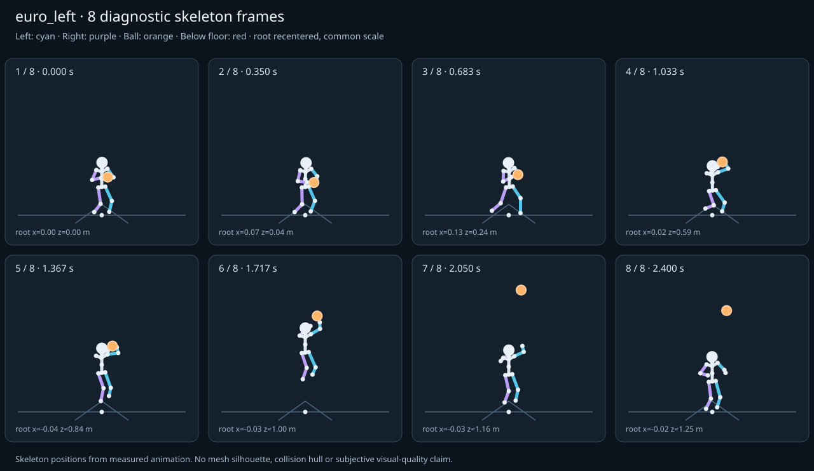

מה הוריד את הציון
- כניסה ויציאה מול המתנה: פער ב־כניסה מול המתנה; יחס חריגה 2.165 (צהוב)
- קפיצות פוזה: RightLeg בזמן 0.85 ש׳; קפיצת סיבוב שקולה 15.0081 מעלות ב־60Hz (צהוב)
כיסוי: 100%. לא כל מדד חל על כל קליפ; הסטטוס והראיות מפורטים למטה.
שמונה פריימים
תצוגת שלד אבחונית שנבנתה מהפריימים הנמדדים. צד שמאל בכחול, ימין בסגול, כדור בכתום. מיקום השורש ממורכז לצפייה; מיקומו בעולם כתוב בכל פריים.

המדדים והראיות
| מדד | מצב | ערך | ציון | סף ופרטי מדידה |
|---|---|---|---|---|
| החלקת רגליים | ירוק | 0.001 height ratio | 99 | {
"definition": {
"label": "החלקת רגליים",
"unit": "height ratio",
"green": 0.01,
"yellow": 0.035,
"weight": 18,
"description": "Maximum horizontal sole displacement from the first sample of each declared support window, divided by character height. Inferred support is used only when no windows were supplied."
},
"value": 0.000461,
"status": "green",
"score": 99.08,
"evidence": {
"coordinateSpace": "authored reference world (simulation-owned)",
"supportSource": "declared",
"windows": 6,
"samples": 150,
"maxDriftMeters": 0.000779,
"p95SpeedMetersPerSecond": 0.038811,
"worst": {
"bone": "RightFoot",
"t": 1.216667,
"start": 1.2,
"end": 1.3,
"driftMeters": 0.000779
}
}
} |
| חדירה לרצפה | ירוק | 0.001 height ratio | 97 | {
"definition": {
"label": "חדירה לרצפה",
"unit": "height ratio",
"green": 0.005,
"yellow": 0.02,
"weight": 15,
"description": "Maximum depth of the supplied sole probe points and all skeletal joint centers below the declared floor plane, divided by height. Sole probes are not a mesh collision audit."
},
"value": 0.000663,
"status": "green",
"score": 97.35,
"evidence": {
"samples": 2960,
"floorY": 0,
"probeKind": "declared sole probes plus skeletal joint centers (no mesh surfaces)",
"maxDepthMeters": 0.001121,
"worst": {
"t": 2.35,
"bone": "LeftFoot",
"depthMeters": 0.001121,
"y": -0.001121
}
}
} |
| קפיצות פוזה | צהוב | 1.037 discontinuity ratio | 79 | {
"definition": {
"label": "קפיצות פוזה",
"unit": "discontinuity ratio",
"green": 1,
"yellow": 2.5,
"weight": 18,
"description": "Maximum adjacent 60 Hz-equivalent step: root-relative marker displacement / 0.04 height, root-relative rotation / 15 degrees, or root translation / 0.08 height. A fast continuous action can also exceed this screening threshold."
},
"value": 1.036937,
"status": "yellow",
"score": 79.26,
"evidence": {
"adjacentPairs": 147,
"observations": 2499,
"maxDegrees60Hz": 15.008126,
"maxMarkerStepHeight60Hz": 0.041477,
"maxRootStepHeight60Hz": 0.012941,
"worst": {
"ratio": 1.0369367232998712,
"t": 0.85,
"previousTime": 0.833333,
"bone": "RightLeg",
"markerStepHeight60Hz": 0.041477,
"degrees60Hz": 3.081671
}
}
} |
| חריגות אנטומיות | ירוק | 0 % affected frames | 100 | {
"definition": {
"label": "חריגות אנטומיות",
"unit": "% affected frames",
"green": 0.5,
"yellow": 3,
"weight": 14,
"description": "Percentage of frames with elbow or knee flexion above 165 degrees, neck bend above 80 degrees, or a segment length changing by more than 5%. Optional calibrated hinge checks detect reverse knee flexion above 8 degrees. Conservative marker limits do not diagnose axial joint twist."
},
"value": 0,
"status": "green",
"score": 100,
"evidence": {
"testedFrames": 148,
"affectedFrames": 0,
"checks": 2516,
"maxLimbFlexionDegrees": 130.960816,
"maxRelativeSegmentLengthChange": 0,
"hingeDirectionChecked": true,
"axialTwistChecked": false,
"violations": []
}
} |
| מגע בכדור | ירוק | 0.001 height ratio | 99 | {
"definition": {
"label": "מגע בכדור",
"unit": "height ratio",
"green": 0.015,
"yellow": 0.05,
"weight": 13,
"description": "Maximum absolute distance from the ball surface to the sampled, bone-transformed declared contact point, divided by height. Events are evaluated at their exact declared times by interpolation."
},
"value": 0.000549,
"status": "green",
"score": 99.27,
"evidence": {
"radiusMeters": 0.12,
"samples": 204,
"missed": [],
"contacts": [
{
"t": 0.783333,
"bone": "RightHand",
"gapMeters": 0.000928,
"signedGapMeters": -0.000928,
"centerDistanceMeters": 0.119072,
"contactPoint": [
0.103503,
1.167021,
0.605265
],
"ballCenter": [
0.221436,
1.179072,
0.616433
],
"declaredLocalPoint": true
},
{
"t": 1.683333,
"bone": "LeftHand",
"gapMeters": 0.000561,
"signedGapMeters": 0.000561,
"centerDistanceMeters": 0.120561,
"contactPoint": [
0.24477,
2.292845,
1.318794
],
"ballCenter": [
0.135129,
2.330492,
1.285682
],
"declaredLocalPoint": true
},
{
"t": 0.783333,
"bone": "LeftHand",
"gapMeters": 0.000517,
"signedGapMeters": 0.000517,
"centerDistanceMeters": 0.120517,
"contactPoint": [
0.34072,
1.179399,
0.599242
],
"ballCenter": [
0.221436,
1.179072,
0.616433
],
"declaredLocalPoint": true
},
{
"t": 1.25,
"bone": "LeftHand",
"gapMeters": 0.000489,
"signedGapMeters": -0.000489,
"centerDistanceMeters": 0.119511,
"contactPoint": [
0.195501,
1.348183,
1.089386
],
"ballCenter": [
0.086881,
1.3923,
1.066185
],
"declaredLocalPoint": true
},
{
"t": 1.15,
"bone": "LeftHand",
"gapMeters": 0.000449,
"signedGapMeters": -0.000449,
"centerDistanceMeters": 0.119551,
"contactPoint": [
0.213074,
1.339288,
0.978504
],
"ballCenter": [
0.10189,
1.379996,
0.995045
],
"declaredLocalPoint": true
},
{
"t": 0.816667,
"bone": "RightHand",
"gapMeters": 0.000408,
"signedGapMeters": -0.000408,
"centerDistanceMeters": 0.119592,
"contactPoint": [
0.103443,
1.190497,
0.633367
],
"ballCenter": [
0.220107,
1.214793,
0.643439
],
"declaredLocalPoint": true
},
{
"t": 0.85,
"bone": "LeftHand",
"gapMeters": 0.0004,
"signedGapMeters": 0.0004,
"centerDistanceMeters": 0.1204,
"contactPoint": [
0.335924,
1.248227,
0.655373
],
"ballCenter": [
0.216739,
1.248245,
0.672436
],
"declaredLocalPoint": true
},
{
"t": 1.483333,
"bone": "RightHand",
"gapMeters": 0.000385,
"signedGapMeters": -0.000385,
"centerDistanceMeters": 0.119615,
"contactPoint": [
0.000523,
2.04903,
1.178368
],
"ballCenter": [
0.117149,
2.073566,
1.188574
],
"declaredLocalPoint": true
},
{
"t": 1.516667,
"bone": "RightHand",
"gapMeters": 0.000379,
"signedGapMeters": -0.000379,
"centerDistanceMeters": 0.119621,
"contactPoint": [
0.005226,
2.135332,
1.195665
],
"ballCenter": [
0.121868,
2.159795,
1.205934
],
"declaredLocalPoint": true
},
{
"t": 1.45,
"bone": "RightHand",
"gapMeters": 0.000343,
"signedGapMeters": -0.000343,
"centerDistanceMeters": 0.119657,
"contactPoint": [
-0.004664,
1.94981,
1.160789
],
"ballCenter": [
0.111994,
1.974396,
1.170997
],
"declaredLocalPoint": true
},
{
"t": 0.85,
"bone": "RightHand",
"gapMeters": 0.000312,
"signedGapMeters": -0.000312,
"centerDistanceMeters": 0.119688,
"contactPoint": [
0.1,
1.223796,
0.662457
],
"ballCenter": [
0.216739,
1.248245,
0.672436
],
"declaredLocalPoint": true
},
{
"t": 1.45,
"bone": "LeftHand",
"gapMeters": 0.000311,
"signedGapMeters": 0.000311,
"centerDistanceMeters": 0.120311,
"contactPoint": [
0.221539,
1.93505,
1.201435
],
"ballCenter": [
0.111994,
1.974396,
1.170997
],
"declaredLocalPoint": true
},
{
"t": 0.883333,
"bone": "RightHand",
"gapMeters": 0.000303,
"signedGapMeters": -0.000303,
"centerDistanceMeters": 0.119697,
"contactPoint": [
0.093884,
1.254406,
0.694043
],
"ballCenter": [
0.210605,
1.278966,
0.704065
],
"declaredLocalPoint": true
},
{
"t": 1.416667,
"bone": "LeftHand",
"gapMeters": 0.000299,
"signedGapMeters": 0.000299,
"centerDistanceMeters": 0.120299,
"contactPoint": [
0.216166,
1.824525,
1.183719
],
"ballCenter": [
0.10665,
1.863948,
1.153325
],
"declaredLocalPoint": true
},
{
"t": 0.183333,
"bone": "LeftHand",
"gapMeters": 0.000289,
"signedGapMeters": -0.000289,
"centerDistanceMeters": 0.119711,
"contactPoint": [
0.169792,
0.950121,
0.294214
],
"ballCenter": [
0.051357,
0.950113,
0.311647
],
"declaredLocalPoint": true
},
{
"t": 0.816667,
"bone": "LeftHand",
"gapMeters": 0.000281,
"signedGapMeters": 0.000281,
"centerDistanceMeters": 0.120281,
"contactPoint": [
0.339167,
1.215154,
0.62635
],
"ballCenter": [
0.220107,
1.214793,
0.643439
],
"declaredLocalPoint": true
},
{
"t": 1.25,
"bone": "RightHand",
"gapMeters": 0.000278,
"signedGapMeters": -0.000278,
"centerDistanceMeters": 0.119722,
"contactPoint": [
-0.029814,
1.367488,
1.056196
],
"ballCenter": [
0.086881,
1.3923,
1.066185
],
"declaredLocalPoint": true
},
{
"t": 1.483333,
"bone": "LeftHand",
"gapMeters": 0.000268,
"signedGapMeters": 0.000268,
"centerDistanceMeters": 0.120268,
"contactPoint": [
0.226689,
2.034314,
1.218983
],
"ballCenter": [
0.117149,
2.073566,
1.188574
],
"declaredLocalPoint": true
},
{
"t": 0.65,
"bone": "RightHand",
"gapMeters": 0.000261,
"signedGapMeters": -0.000261,
"centerDistanceMeters": 0.119739,
"contactPoint": [
0.098505,
1.019824,
0.5036
],
"ballCenter": [
0.217716,
1.019634,
0.514839
],
"declaredLocalPoint": true
},
{
"t": 1.65,
"bone": "LeftHand",
"gapMeters": 0.000255,
"signedGapMeters": 0.000255,
"centerDistanceMeters": 0.120255,
"contactPoint": [
0.243717,
2.266584,
1.300476
],
"ballCenter": [
0.134269,
2.305644,
1.269546
],
"declaredLocalPoint": true
}
],
"contactDetailsTruncated": true,
"coordinateSpace": "authored reference world (simulation-owned)"
}
} |
| כניסה ויציאה מול המתנה | צהוב | 2.165 continuity ratio | 63 | {
"definition": {
"label": "כניסה ויציאה מול המתנה",
"unit": "continuity ratio",
"green": 1,
"yellow": 3,
"weight": 10,
"description": "Worst entry/exit mismatch to the best matching idle phase: RMS marker error / 0.04 height, RMS bone rotation / 25 degrees, or RMS endpoint velocity error / 0.75 height per second. Horizontal root translation is aligned; root height and body pose remain measurable."
},
"value": 2.165047,
"status": "yellow",
"score": 62.52,
"evidence": {
"entry": {
"ratio": 2.165046641384986,
"t": 0,
"idleTime": 2.1,
"markers": 17,
"rmsPositionHeight": 0.066833,
"rmsRotationDegrees": 54.126166,
"rmsVelocityHeightPerSecond": 0.0777,
"velocityEvaluated": true
},
"exit": {
"ratio": 2.0830799465747787,
"t": 2.4,
"idleTime": 1.933333,
"markers": 17,
"rmsPositionHeight": 0.054304,
"rmsRotationDegrees": 52.076999,
"rmsVelocityHeightPerSecond": 0.216014,
"velocityEvaluated": true
},
"worstEndpoint": "entry",
"alignment": "horizontal root translation; raw asset poses used when provided"
}
} |
| מהירות גוף מול צעדים | לא חל | — relative speed error | — | {
"definition": {
"label": "מהירות גוף מול צעדים",
"unit": "relative speed error",
"green": 0.2,
"yellow": 0.5,
"weight": 8,
"description": "Relative difference between average root travel speed and the median backward support-foot sweep speed relative to the root. Cadence and implied stride lengths are also reported. In-place clips need an explicit reference travel scenario; stationary actions are not scored as locomotion."
},
"value": null,
"status": "not-applicable",
"score": null,
"reason": "This action is not declared locomotion.",
"evidence": {}
} |
| סימטריה | ירוק | 0.022 relative mismatch | 85 | {
"definition": {
"label": "סימטריה",
"unit": "relative mismatch",
"green": 0.03,
"yellow": 0.1,
"weight": 4,
"description": "Maximum bilateral segment-length mismatch. Looping locomotion additionally compares reflected half-cycle leg markers; explicit pose symmetry compares simultaneous bilateral markers. One-sided actions retain unscored motion diagnostics, so a valid kick or dribble arm is not penalized for intentional asymmetry."
},
"value": 0.021957,
"status": "green",
"score": 85.36,
"evidence": {
"mode": "mirrored clip pair",
"modeSource": "structural default for intentional asymmetry",
"structuralMismatch": 0,
"segments": [
{
"segment": "Arm-ForeArm",
"mismatch": 0
},
{
"segment": "ForeArm-Hand",
"mismatch": 0
},
{
"segment": "UpLeg-Leg",
"mismatch": 0
},
{
"segment": "Leg-Foot",
"mismatch": 0
}
],
"motionRmsHeight": 0.021957,
"worstMotion": {
"t": 0.3,
"errorHeight": 0.046835
},
"bilateralPoseRmsHeightUnscored": 0.11771,
"note": "One-sided authored actions are checked for structural symmetry only."
}
} |